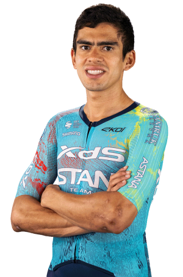

Harold Tejada
Datos personales
- Nombre completo: Harold Alfonso Tejada Canacue
- Fecha de nacimiento: 27 de Abril de 1997
- País de nacimiento: Colombia
- Equipo: XDS ASTANA TEAM
- Dorsal: 181

Datos equipos
- 2020 - 2026: Astana Team
- 2019: Medellín
- 2017 - 2018: EPM
Temporada 2025
| Nombre del Datos | Resultado |
|---|---|
| Campeonatos Nacionales de Colombia | 5 |
| UAE Tour | 9 |
| Paris-Niza | 8 |
| Vuelta a España 2025 | 12 |
| Critérium du Dauphné 2025 | 2 |
| Campeonato Mundial de Ruta (Kigali) | 14 |
Multimedia
Equipo XDS Astana Team en la Vuelta Ciclista a España 2026.